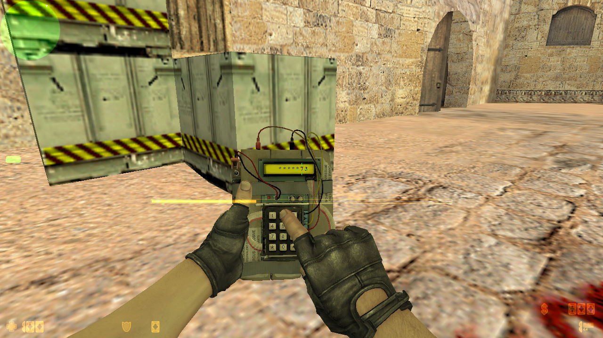

Versiones Principales
La versión clásica que definió el competitivo. Marcó una generación en cibercafés y torneos locales.
Mapas icónicos como de_dust2 y gameplay rápido la convirtieron en una leyenda.
El salto gráfico al motor Source ofreció físicas realistas y una jugabilidad renovada.
Aunque no superó la popularidad de 1.6, atrajo una comunidad fiel y eventos competitivos.
La revolución del juego con skins, matchmaking y una escena esports masiva.
Se mantuvo como el shooter más jugado durante años, gracias a su jugabilidad refinada.

La versión más reciente que adopta el motor Source 2, con gráficos y físicas avanzadas.
Mantiene el legado competitivo mientras introduce nuevas mecánicas y tecnologías.
Modos de Juego Populares
Bomb Defusal
El modo competitivo por excelencia. Plantar o desactivar la bomba define al equipo ganador.
Hostage Rescue

Los antiterroristas deben rescatar rehenes protegidos por los terroristas en zonas cerradas.
Deathmatch

Modo libre donde reapareces constantemente para practicar aim y mejorar reflejos.